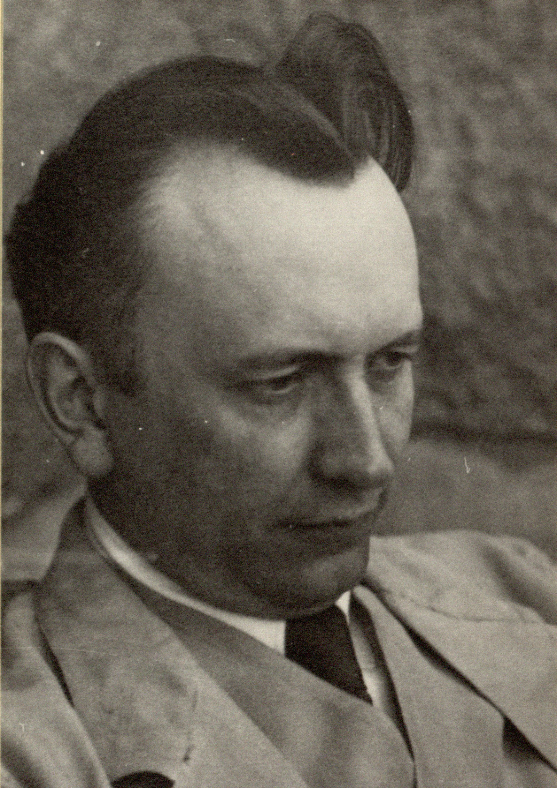

Jaspers

Karl Theodor Jaspers (Oldenburg, 23 febbraio 1883 – Basilea, 26 febbraio 1969) è stato un filosofo e psichiatra tedesco. Ha dato un notevole impulso alle riflessioni nei campi della psichiatria, della psicologia, della filosofia, della teologia e della politica.
Pensiero
Nell'opera filosofica di Karl Jaspers, appartenente al filone esistenzialista del Novecento, si ritrovano i temi trattati dai grandi predecessori dell'Ottocento: da un lato la considerazione profonda per l'esistenza umana nella sua totalità con chiaro riferimento a Kierkegaard e a Nietzsche, dall'altra l'incontro del 1909 con Max Weber, l'influenza di Dilthey e poi la lettura di Husserl e l'influenza della scuola fenomenologica. Il suo testo fondamentale Filosofia (1931) raccoglie la summa del suo pensiero ed è l'autore stesso ad ammettere che fra i suoi libri questo fu sempre per lui il più caro. L'opera nasce legata strettamente alla psicologia - che, come è stato detto, era l'attività cui Jaspers aveva scelto di dedicarsi – ed è infatti la conoscenza di quelle che verranno successivamente chiamate "situazioni limite", che si presentano così sovente nello studio della vita psicologica, che permette al filosofo di definire il ruolo della filosofia del suo tempo: "chiarificazione dell'esistenza". Questa ridefinizione prende ovviamente spunto dalla situazione delle scuole filosofiche tedesche all'inizio del secolo scorso. "La filosofia, che a partire dal 1901 cercai nelle università, mi deluse" così Jaspers in Filosofia la constatazione di una situazione accademicamente paludosa nelle lezioni da lui frequentate lo portano a pronunciare una frase che può aiutare nella comprensione del testo, capolavoro della sua produzione: "Era mio impulso salvarmi spiritualmente". Questo impulso lo allontana da Edmund Husserl che non lo soddisfa per la difficoltà, dallo stesso Husserl ammessa, della sua fenomenologia e lo spinge verso la lettura di Kierkegaard soprattutto e di Nietzsche. Il legame stretto della filosofia con la vita "vera e propria", “concreta” è dato nelle domande filosofiche che fin dall'antichità riguardano il soggetto del pensiero e l'affermazione sopra citata dell'autore sottolinea questa prospettiva e la ribadisce. L'esistenza è ciò che viene chiamata in causa nell'interrogarsi dell'uomo. Jaspers definisce l'esistenza come "ciò che non diventa mai oggetto, l'origine partendo dalla quale penso e agisco, ciò che si rapporta a se stessa e, in ciò, alla sua trascendenza". Fin dalla Prefazione al testo vengono a definirsi le parole chiave della sua speculazione:
- Esserci (Dasein): l'esser qui proprio di tutte le cose che sono al mondo;
- Esistenza (Existenz): definisce solo la condizione dell'uomo che non può essere definita completamente, ma solo chiarita, delucidata, analizzata;
- Trascendenza (Transzendenz): ciò che è al di là della situazione attuale dell'esistenza, definisce la stessa pratica del filosofare come scoperta.
Orientazione filosofica
Il testo si svolge presentando i tre impulsi principali che portano l'uomo a trascendere. Inizialmente l'esistente si trova in contatto con il mondo che rappresenta un'infinità di oggetti esistenti e dati e da questa situazione disorganizzata viene a definirsi l'orientazione filosofica del mondo circoscritta in un orizzonte che è quello del soggetto che pensa (esistente). Jaspers, attento al significato della storia della filosofia, vede nell'idealismo e nel positivismo i due tentativi fatti nell'Ottocento per cercare di comprendere completamente il mondo superando il punto di vista del soggetto conoscente. Entrambi questi tentativi - che si risolvevano nella visione dell'assoluto l'uno, e nella onnicomprensività scientifica l'altro - vengono visti da Jaspers come tentativi di determinare in maniera dogmatica l'orientazione filosofica del mondo. Chiarificazione dell'esistenza Il tentativo di comprendere il mondo si risolve in uno "scacco" e in questo modo il pensiero giunge alla chiarificazione dell'esistenza. Questo passaggio vede l'esistente utilizzare i mezzi che gli sono propri per definire la sua situazione. Per Jaspers la decisione è il fulcro delle possibilità dell'esistente, che tentando le strade della trascendenza cerca di non ridursi a mero esserci. Io stesso, comunicazione, storicità, volontà, libertà, situazioni-limite (situazioni che sono così necessariamente, come il dolore, la morte, sono definite dall'autore come l'esistenza stessa), coscienza assoluta, azioni incondizionate e l'esistenza della soggettività nell'oggettività sono i temi trattati nel libro secondo dell'opera. L'ultima parte dell'opera, "Metafisica", si occupa dell'essenza stessa dell'interrogazione filosofica: il trascendere. Il pensiero trascendente, utilizza tre vie che possono accertarci dell'essere della trascendenza: il trascendere formale, i rapporti esistenziali alla trascendenza e la lettura della scrittura cifrata. La prima via non ci dice qual è l'essenza della trascendenza, ma ci rende certi del fatto che essa è. Utilizzando le categorie del pensiero immanente è possibile con esse, trascendere dal pensabile all'impensabile: il naufragio del pensiero categoriale, ci mostra - allora - la presenza della trascendenza. Tutte le categorie vengono impiegate per dire che la trascendenza «non è nè qualità, nè quantità, nè relazione, nè fondamento (..)». L'essere della trascendenza al quale si perviene nel trascendere formale, è - dunque - senza determinazioni, tendendo a identificarsi con l'Uno di plotiniana memoria. Il secondo metodo utilizzato dallo Jaspers, approfondisce il legame esistenziale che con la trascendenza l'uomo può instaurare. Concetto portante di questa parte è quello di "situazione-limite". Le situazioni-limiti sono come un muro contro il quale urtiamo: esse sono il dolore, il caso, la lotta, la morte. Se l'esistenza ha il coraggio di calarsi in esse, "a occhi aperti", può destarsi e afferrare la presenza della trascendenza. Nell'ultima via, Jaspers articola la sua metafisica della cifra. La trascendenza, oltrepassando ogni determinazione concettuale, tende a identificarsi col Deus absconditus della teologia negativa. Per sopperire l'abissalità posta tra esistenza e trascendenza, si ricorre al medio della cifra. La cifra è il possibile linguaggio della trascendenza: «tutto ciò che è prodotto dall'uomo, il reale di fatto, l'oggetto rappresentato, quello pensato e che si trova nella tradizione mistica, religioso-culturale, sacrale, poetica e artistica, nella filosofia». L'esserci allora può diventare cifra della trascendenza. Le cifre però, possono essere colte soltanto dall'esistenza possibile: solo allora possono rinviarci alla trascendenza. La cifra più importante - sulla quale Jaspers si sofferma particolarmente - è quella del naufragio. Nel naufragio l'esistenza può disperdersi - oppure - sperimentare l'essere della trascendenza, come una luce che fende le tenebre. Viene in questo modo aperto un dialogo della filosofia con la religione. È opportuno segnalare che l'intero testo è concepito “per cercare di generare un atteggiamento interiore capace di instaurare un rapporto significativo con i maestri che si presentano storicamente in così grandi figure” ovvero le grandi figure della storia della filosofia